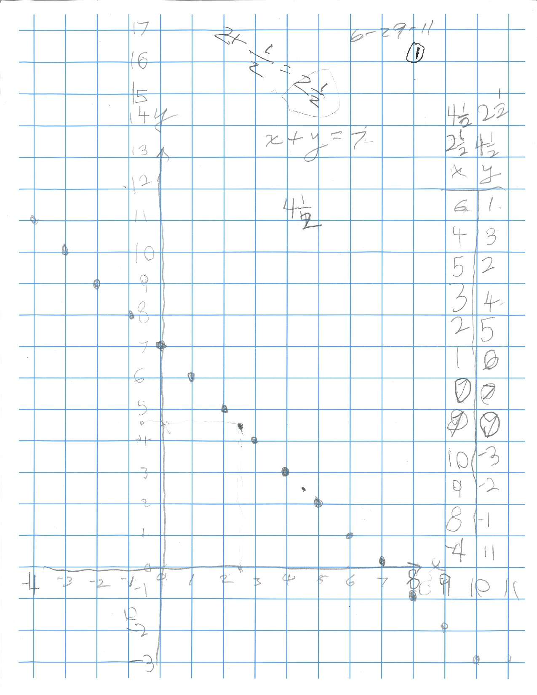

Sarah W, age 6,
comes from CA to work
with Don for 5 days
(her mother lived in Champaign 30
years ago when she worked with Don)
Day 1: Wednesday
29 June 2011
1. Don had her graph x+y=7 (she would turn 7 in 2
weeks).

Sarah
figured out the fractions 4 1/2 + 2 1/2 = 7 and negative numbers like 8
+ -1 = 7 (the negative sign should be raised,
but Don doesn't know how on his
iMac).
2. Don and Sarah got into a discussion like this 3x 1/3 = 1,
4x? =1,
7x?=1 … and Ax? =1 which she was able to answer as 1/A.
3. Don started
Sarah on division- "how many 2's make 6?"
writing this 3 ways: 2) 6 , 6/2=?, and 6 � 2 =
?, then used 2) 6 form from there on.
Note well, the use of PATTERNS in all of his work with Sarah.
In
dividing 65 by 2, Sarah wasn't sure about dividing the 5 by 2 also. Don
introduced her to cokie sharing- share 5
cookies
between 2
people, how many cookies do we each get? 2
1/2 . So how many 2's make 65? 32 1/2. See Sarah's video "It's
Raining
Cookies" at the end of her stay!!
Sarah's #1 quote
(while looking at the variable x in sin x in the division problem
above): "This is like
the A above in Ax1/A=1." Don thought that she had the idea of using
variables and generalizing statements- WOW!
4. Sarah makes up
division problems
2)50 … 2)50 with 21
zeros ….2)5 google = 25x10^99. Notice how Sarah went around the
page to get the 100 zeros! She was so
delightful!
5. How old are you Don? Don
tells her he is 122; how old am I if I was born in 1930? she figures it
out to be 81.
6. Powers of 2; Sarah graphs 2^x = y from
2^5=32 to 2^(-4) = 1/16. Notice in the table at the right Sarah does
some interesting
and wonderful looping at the finish of the numbers and Don felt he had to write the
fractions there to make them readable. (but not as wonderful as Sarah
made them!!) Sara called the graph "a slide"
7. Sarah worked on the tower puzzle at times this day, but she never got to where Sheri did in Tower
Puzzle
8. Sarah found the small dog and
bigger dog that Genny made years ago. See Genny's work here.
Don asked her to find out how many cubes it would take to double each
dimension to make it bigger. The little dog is made with 21 cubes, the
big dog, Sarah guessed the bigger one had 42 cubes.
Day 2 Thursday 30 June 2011
Volume of big dog is 8x the small
dog when you double each dimension
2.Guess the number game:
3. The "Genuine Whats It"
4. Graph x-y=2

Notice: -1 - -3 = 2 (the negatives should be raised as shown on
the graph at the right, 2nd box up- Sarah actually put the negative
signs above the numbers! and see her sentence between the 9 and 10 on
the y-axis.)
5 The "Square Hanayama Puzzle"
CIMG0149
Day 3 Friday 1 July 2011

Sarah's #3 Quote: "The fun part of knowing things is learning things."
Day 4: Saturday 2 July 2011
1. 12x13 in her head
2. Infinite series 1/2 + 1/4 + 1/8 + ...

3. Will it ever fill up the big square? Don asked Sarah. Her response:

4. Work on Peg Game and making the table below
 file:///Users/donaldcohen/Movies/iMovie%20Projects.localized/It's%20Raining%20Cookies.rcproject/
file:///Users/donaldcohen/Movies/iMovie%20Projects.localized/It's%20Raining%20Cookies.rcproject/